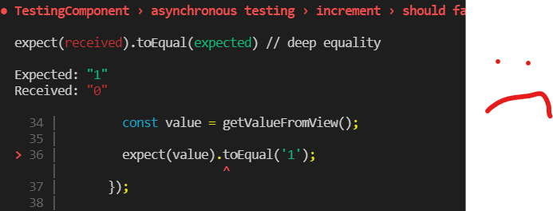
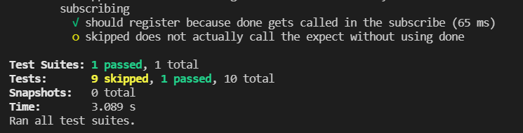

it('should fail to register increment because of timeout in code', () => {
// fixture.debugElement.query(By.css('#increment-button')).triggerEventHandler('click', null);
clickIncrementButton();
fixture.detectChanges();
// fixture.debugElement.query(By.css('label')).nativeElement.innerHTML;
const value = getValueFromView();
expect(value).toEqual('1');
});

Subscribing without adding done
it('does not actually call the expect without using done', () => {
clickDecrementButton();
component.value$.subscribe(() => {
fixture.detectChanges();
const value = getValueFromView();
expect(value).toEqual('100');
});
});

Subscribing
it('should register because done gets called in the subscribe', (done) => {
component.value$.subscribe(() => {
fixture.detectChanges();
const value = getValueFromView();
done();
expect(value).toEqual('-1');
});
clickDecrementButton();
});
fakeAsync
it('should register with a tick of 2500 using fakeAsync', fakeAsync(() => {
clickIncrementButton();
tick(2500);
fixture.detectChanges();
const value = getValueFromView();
expect(value).toEqual('1');
}));
Fake timer
it('should register using fakeTimers', () => {
jest.useFakeTimers();
clickDecrementButton();
jest.advanceTimersByTime(2500)
fixture.detectChanges();
const value = getValueFromView();
expect(value).toEqual('-1');
jest.runOnlyPendingTimers();
});
Marbles
whitespace: horizontal whitespace is ignored.
frame: 1 "frame" of virtual time passing (see above description of frames).
time progression:
complete: The successful completion of an observable.
error: An error terminating the observable.
e.g. 'a'
Example service
export class TestingService {
private value: number = 0;
increment(): Observable<number> {
this.value++;
return new Observable<number>((observer) => {
observer.next(this.value)
}).pipe(debounceTime(2500));
}
decrement(): Observable<number> {
this.value--;
return new Observable<number>((observer) => {
observer.next(this.value)
}).pipe(debounceTime(2500));
}
}